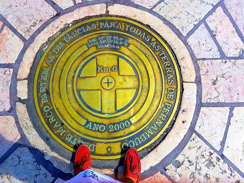

Marco Zero

O Bairro do Recife, no centro da cidade, foi a trilha adotada para expandir o crescimento da área do Estado
de Pernambuco, que se iniciou com a ocupação de povos europeus.
Famoso por ser o bairro mais antigo da cidade, a expansão dele se deu de forma mais pronunciada a partir de
1630, no contexto da imigração holandesa, com avanços que foram mantidos mesmo após a retomada da posse das
terras pelos portugueses. Na época, houve até mesmo períodos em que o antigo bairro chegou a apresentar
elevada densidade populacional.
A partir de 1910, o bairro passou por outro período marcante, fruto de obras que buscaram tanto modernizar o
porto ali presente quanto erguer novas construções, fazendo que cerca de dois terços do bairro tivessem de
ser demolidos para dar espaço a novas edificações.
A Praça do Marco Zero, também conhecida como Praça do Rio Branco, localizada no coração desse bairro, é onde podem ser vistos alguns reflexos de todos esses momentos, de modo que no entorno estão localizados monumentos históricos importantes.
Após ter permanecido submerso até meados do século 18, por ser a rota de entrada pelo mar, o Marco Zero de Recife foi oficialmente inaugurado em 31 de janeiro de 1938. Nos anos 1990, o entorno também passou por reformas que buscaram revitalizar a área portuária, o que implicou a retirada de parte da cobertura vegetal que ali existia. Com isso, os antigos casarões deram lugar a novos estabelecimentos e avenidas.